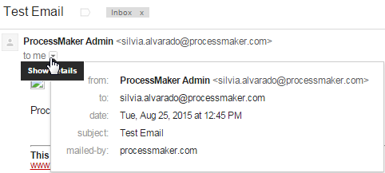
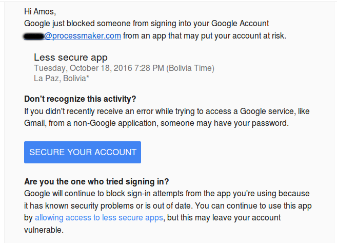

- Overview
- Edit the Email Server Configurations
- Email Server Configuration Options
- Settings of Common Email Providers
- Email Configuration for Gmail
- Email Configuration for Yahoo!
- Email Configuration for HotMail
- Email Configuration for Outlook
- Checking the Email Configuration
- Sending Emails from Different Server and User Accounts
Overview
ProcessMaker can be configured to send out emails to keep its users apprised of new cases in their inbox and notify them at specified times while running cases. This page will explain the settings that can be used to configure the email servers within ProcessMaker.
The user can configure the email servers to be able to use the following components:
- Tasks: Automatically emails a user when they are assigned to a task in a case.
- Events: Sends Message Events to users at particular times in the course of a case.
- Trigger code with the PMFSendMessage() function.
- Case Notes: Sends the case notes in emails to the users who have participated in the case.
Note: The email settings have been tested with Gmail, Yahoo and Hotmail services. It is not recommended to use Office 365, since it has not been tested and some configurations may not work as expected.
Edit the Email Server Configurations
Allow ProcessMaker to send out email notifications by logging in to ProcessMaker with a user such as "admin", who has the PM_SETUP permission in their role.
Then, to edit the Email Server configuration go to ADMIN > Settings > Email Servers and the following interface will appear.
Note: Users must have the PM_SETUP_EMAIL permission assigned to their role to access the ADMIN > Settings > Email Servers option.

Select the only item listed in the page that opens. This item represents an email server that is not configured yet called "MAIL". Click on the Edit button to change the configuration of this email server.

A new window named "Edit Email Server" will appear, where two options for the "Email Engine" field are presented:
- SMTP (PHPMailer)
- Mail (PHP)
Email Server Configuration Options
In the Edit Email Server window, the Email Engine field must first be defined. In this dropdown select either:
- SMTP (PHPMailer): This option sends email using the PHPMailer program. Select this option to use an email server that supports the Simple Mail Transport Protocol (SMTP). If your organization does not have its own email server (such as sendmail, postfix, or exim), use an external email service (such as Gmail, Yahoo or Hotmail) that supports SMTP. If using an external email service, read the configuration information below for Hotmail, Yahoo or Gmail, or see this list for the SMTP configuration of other email providers.
- Mail (PHP): Select this option to use PHP's mail() function to send the email via the Mail Transfer Agent (MTA), such as SendMail, Postfix or Exim, which is installed and configured on the same server where ProcessMaker is installed. Make sure that the php.ini file on the server is configured to use the MTA. If unable to deliver mail, check the sendmail_path setting. If using a Windows server, it may be necessary to change the SMTP and stmp_port settings.
SMTP (PHP Mailer)
If this option has been selected in the Email Engine option, the following fields must be filled in:

Where:
- Server: The IP address or domain name for the email server. For example, "smtp.gmail.com", "smtp.mail.yahoo.com" or "smtp.example.com".
- Port (default 25): The port number used by the email server. Generally port 25 is used, or alternatively port 587. If connecting to the email server with a SSL or TLS connection, generally port 465 is used. If left blank, the default port 25 will be used. (See also the corresponding settings by email provider.)
Note: Make sure that a firewall is not blocking this port on your ProcessMaker server.
- Require Authentication: Check this option to enable authentication. When checked, the Password field is displayed.
- Password: The password for the user account.
- Sender Account: The name of the user account from which emails are sent. Some email servers, such as Gmail, require that the account name include the full email address, such as: johndoe@gmail.com
- Sender Email: Email account from which the email notifications will be sent.
- Sender Name: Set the name of the email address from which emails are sent, such as "My Company Admin". If left blank, then emails will be sent from "ProcessMaker" by default. When the flow of a process reaches an Intermediate Email event and the Sender Name is left blank, the Sender Name displays the value of the Sender Account field by default.
- Use Secure Connection: Select whether the email requires a secure connection:
- No: No secure connection to the email server required.
- TLS: Select to use Transport Layer Security to connect to the email server.
- SSL: Select to use Secure Sockets Layer to connect to the email server.
Note: It is strongly recommended to establish secure connections with email servers using SSL or TLS security certificates by enabling one of the two previous options.
Send a test mail: Check this option to send a test mail. When checked, it displays the Mail to field.
- Mail to: Email account to which the test mail will be sent.
- Set as default configuration: If checked it, will set this email configuration as the default from now on.
Mail (PHP)
If using this option, no configuration information needs to be entered.

- Sender Email The email account from which the email notifications will be sent.
- Sender Name: Set the name of the email address from which emails are sent, such as "My Company Admin". If left blank, then emails will be sent from "ProcessMaker" by default. When the flow of a process reaches an Intermediate Email event and the Sender Name is left blank, the Sender Name displays the value of the Sender Account field by default.
Send a test mail: Check this option to send a test mail. When checked, it displays the Mail to field.
- Mail to: Email account to which the test mail will be sent.
Testing the Email Configuration
After filling in the email settings, click on the Test button to test the email configuration.

If there is an error when configuring the server, then a red X will appear in red as seen in the image below. Try changing some of the settings and test again.

If the "Send a test mail" option was selected, an email should arrive from "Process Maker OS":

Once all the tests pass, click on the Save Changes button to save the email configuration.
Note: Take into account that when using one email account in the Sender Account field, but a different Sender Email account, the from account sent in the emails will always be the account set in the Sender Account field. The account set in the Sender Email field will be sent as the reply-to.

Settings of Common Email Providers
The following sections explain how to set the email server of four common email providers, which are:
Email Configuration for Gmail
- Email Engine: SMTP (PHPMailer)
- Server: smtp.gmail.com
- Port: 587
- Require authentication:

- Sender Account: account_name@gmail.com or account_name@company_name.com
- Password: account_password
- Use Secure Connection: TLS
Note: To save a copy of outgoing emails in the Sent folder of a Gmail account, IMAP needs to be enabled:
- Sign in to Gmail
- Click the gear icon in the top right.
Select Settings.

- Click Forwarding and POP/IMAP.
- Select Enable IMAP.
- Click Save Changes.
Gmail 2-Step Verification
If using a 2-Step Verification Gmail account, it is necessary to use a Google Application Password to make a connection with ProcessMaker.
To do this, log into your Gmail account and go to your App passwords page. Click Select app and choose the Other option.

Write ProcessMaker in the text field and click the Generate button.

An App password (the 16 character code in the yellow bar) will be generated. Copy the code and click on Done to close the window. Take into consideration that each app password is only used once, and once generated that app password code cannot be seen again.

The new app password will be listed and ready to use.

Now, go to the Email Server Configuration in ProcessMaker, and instead of your normal password place the 16-character code in the Password field.

After filling in the email settings, click on the Test button to test the email configuration.

Turn on Access for less secure apps in Gmail
Gmail does not allow emails to be sent from apps that it deems less secure. The Access for less secure apps option needs to be enabled in the Gmail account in the Sender Account field if sending the test email fails with the error message: SMTP Error: Could not authenticate

Google will send an email to your Gmail account warning:
Google just blocked someone from signing into your Google Account
xxxx@gmail.com from an app that may put your account at risk.
For example:
Login to your Gmail account. Then, redirect the web browser to the following address:
https://myaccount.google.com/lesssecureapps
Then, mark the option to enable Allow less secure apps.

Now, it should be possible for ProcessMaker to send out emails from the Gmail account.
Email Configuration for Yahoo!
- Email Engine: SMTP (PHPMailer)
- Server: smtp.mail.yahoo.com
- Port: 587
- Require authentication:
- Sender Account: account_name@yahoo.com
- Password: account_password
- Use Secure Connection: TLS
Note: Yahoo limits accounts to 500 emails per day and emails can only be addressed to a maximum of 100 recipients.
Email Configuration for HotMail
- Email Engine: SMTP (PHPMailer)
- Server: smtp.live.com
- Port: 25 or 587
- Require authentication:
- Sender Account: account_name@hotmail.com
- Password: account_password
- Use Secure Connection: TLS
Note: Hotmail accounts are limited to a maximum of 300 messages per day and up to 100 recipients per message.
Email Configuration for Outlook
Settings for Outlook accounts:
- Email Engine: SMTP (PHPMailer)
- Server: smtp-mail.outlook.com
- Port: 25 or 587
- Require authentication:
- Sender Account: account_name@hotmail.com
- Password: account_password
- Use Secure Connection: TLS
Checking the Email Configuration
To make sure that ProcessMaker is properly configured to connect to an email server, go to ADMIN > Settings > Email Servers and send a test email as shown in sections above. If ProcessMaker is unable to connect to the email server, check the address, port number and firewall.
Check the Address
If the test email fails, then first verify that the ProcessMaker server can connect to the email server. Go to the command line of the ProcessMaker server and issue a ping. (Use CTL+C to stop the pings.)
For example:
Note: Some systems may block the IMCP packets used by ping, so the email server may be operating even if the ping fails.
Check the Ports
Then, check which ports are being used by the email server with a tool such as Nmap, which shows which ports are being used.
For example, to check which ports are used by smtp.mail.yahoo.com:
In this case, smtp.mail.yahoo.com is using port 25 for unsecured email and port 465 for email with a secure connection.
To check which ports are being used by the local machine, use netstat -tanp in Linux/UNIX or netstat -anb in Windows.
For example, to figure out which port is being used by the EXIM mail server on the local machine:
Check the Firewall
If the test email fails, then make sure that no firewall is blocking the port used by the email server.
Linux/UNIX:
To see which ports are open, use the netstat command as shown above. To check the status of iptables, use the command: iptables -L -n -v
For example, the following output indicates that iptables isn't configured, so no traffic should be blocked:
Windows:
To see which ports are open, use the netstat command as shown above.
To check the status of Windows firewall:
- In Windows XP/2003/Vista, use the command: netsh firewall show state
- In Windows 7/2008, use the command: netsh advfirewall firewall
Note: The command is not available in Window 7, check this response in this forum to learn about a way to view the ports.
Sending Emails from Different Server and User Accounts
By default, all emails are sent out by the email server and user account configured in ADMIN > Settings > Email. In some processes, however, it may be appropriate to send emails from a different email server and/or user account. In version 2.8.0 and later, the config parameter has been added to the PMFSendMessage() function, to allow emails to be sent out with a different email server and/or user account.
To create a trigger that sends out an email from a custom email server and/or user account, go to DESIGNER and open a process for editing. Then, go to the Triggers tab and click on New. Then select ProcessMaker Functions and click on PMFSendMessage() in the list:

See the documentation for this function. The parameter to configure an alternative email server is the last parameter of the function.

The function definition of PMFSendMessage():
To use an alternative email server and/or user account, the config parameter of PMFSendMessage() should be set either a string with the UID of the email server or account settings, or an associative array with the following values as the keys:
- MESS_ENGINE: Select the email server that will be used to send out emails. Possible values include:
- "PHPMAILER": This option sends email using the PHPMailer program, which is recommended if using an external email service (such as Yahoo!, gmail, hotmail, etc.) or if the server running ProcessMaker is not configured to use a Mail Transfer Agent (such as SendMail, Postfix, exim, etc.).
- "MAIL": This option uses PHP's mail() function to send the email, which means that the server running ProcessMaker should have a Mail Transfer Agent (such as SendMail, Postfix, Exim, etc.) and PHP should be configured to use it. If this option is used, then the MESS_SERVER, MESS_PORT and SMTPSecure parameters are ignored.
- MESS_SERVER: The IP address or domain name of the email server. For example, "smtp.live.com" or "smtp.example.com".
- MESS_PORT: The port number used by the email server. Generally port 25 is used, or alternatively port 587. If connecting to the email server with an SSL or TLS connection, generally port 465 is used.
- MESS_ACCOUNT: The name that will be used in the From field of the message. It can be an email address, such as "johndoe@example.com", or a name, such as "John Doe" or "Acme Inc.". This value depends upon the email provider. For example, the Gmail email server always uses an email address in this field. If this field is an email address, the MESS_FROM_MAIL parameter is ignored, but if it is a name, MESS_FROM_MAIL should be set to a valid email account.
- MESS_FROM_MAIL: If MESS_ACCOUNT is set to a name, set this value to the email address from which the notification will be sent, such as: "johndoe@example.com"
- MESS_RAUTH: Set to 1 if the server requires authentication, meaning that a password is required; otherwise, set it to 0.
- MESS_PASSWORD: The password of the user account.
- SMTPSecure: Select whether the email requires a secure connection:
- "": Set to an empty string if a secure connection to the email server is not required.
- "ssl": If using Secure Sockets Layer to connect to the email server.
- "tls": If using Transport Layer Security to connect to the email server.
Emailing Members of a Group
In this example, the members of a group named "Employees" will receive emails from a Gmail account that is specified in the associative array $serverConfig, which is passed to the config parameter of PMFSendMessage():
$query = "SELECT "
. "DISTINCT GROUP_USER.USR_UID "
. "FROM GROUPWF "
. "INNER JOIN GROUP_USER ON ("
. " GROUPWF.GRP_ID=GROUP_USER.GRP_ID AND "
. " GROUPWF.GRP_TITLE='{$groupName}' "
. ")";
$result = executeQuery($query);
if (!is_array($result) || count($result) < 1) {
$g = new G();
$g->SendMessageText("Unable to find any users in group '$groupName'.", "WARNING");
} else {
$to = "";
foreach ($result as $record) {
$userInfo = userInfo($record['USR_UID']);
if (empty($to)) {
$to = $userInfo['mail'];
} else {
$to .= ", " . $userInfo['mail'];
}
}
$serverConfig = [
"MESS_ENGINE" => "PHPMAILER",
"MESS_SERVER" => "smtp.gmail.com",
"MESS_PORT" => 465,
"MESS_ACCOUNT" => "manager@company.com",
"MESS_FROM_MAIL" => "",
"MESS_PASSWORD" => "xxxxxx",
"SMTPSecure" => "tls",
"MESS_RAUTH" => 1
];
PMFSendMessage(@@APPLICATION, 'manager@company.com', $to, '', '', 'Expenses for Project', 'projectExpenses.html', [], [], true, 0, $serverConfig);
}